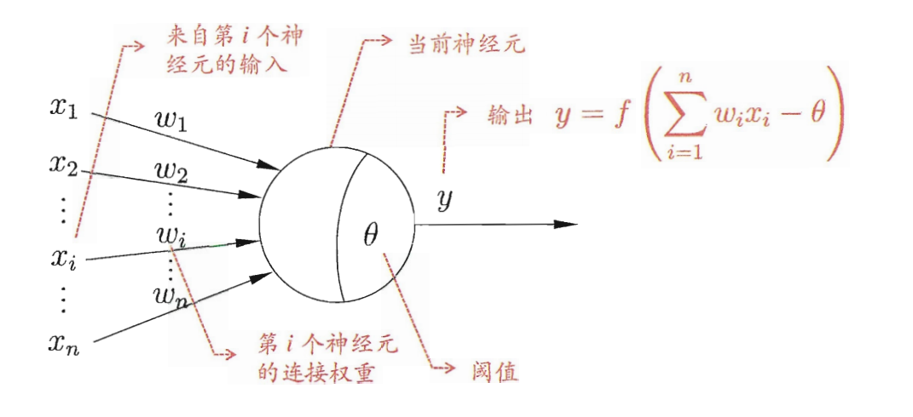
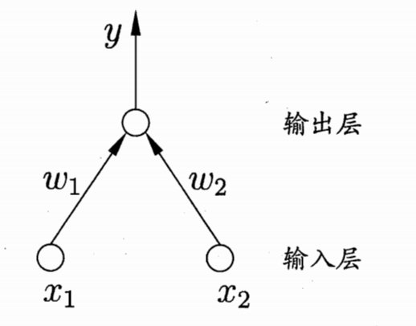
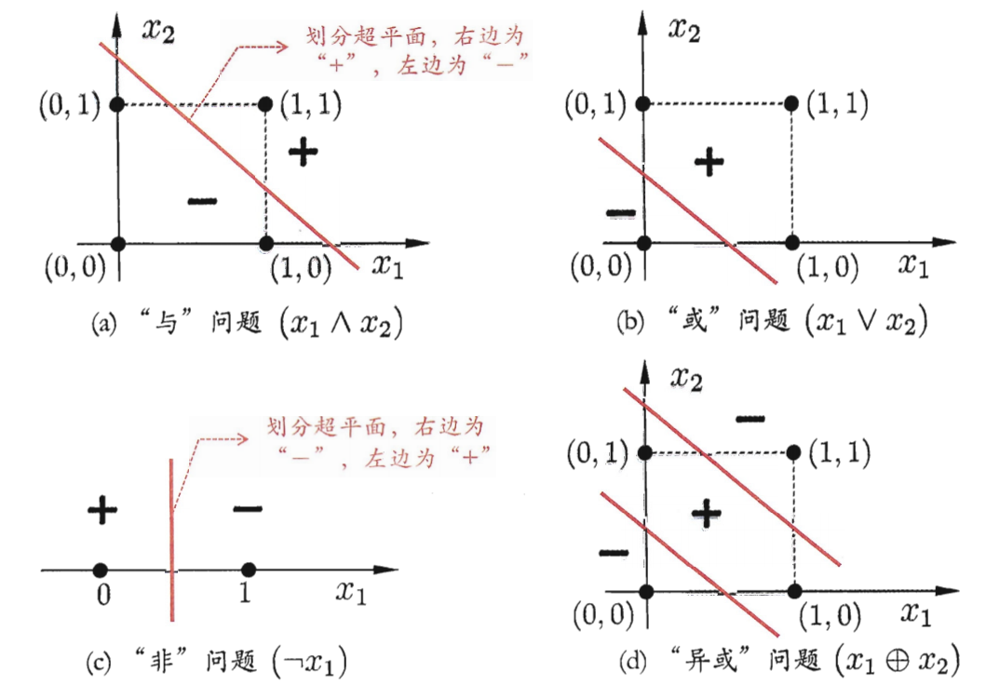
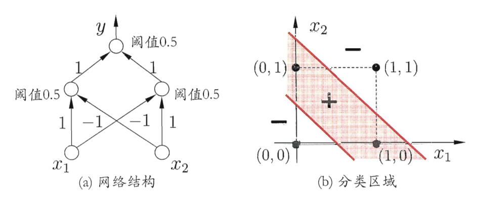
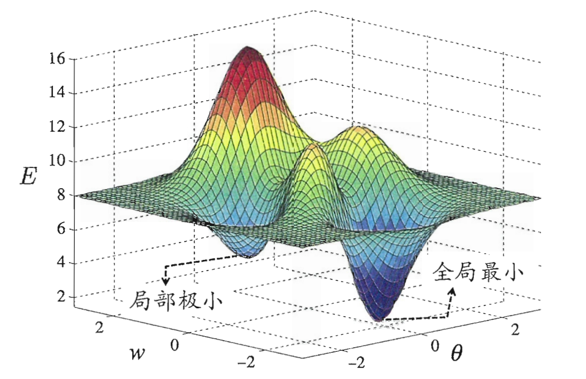
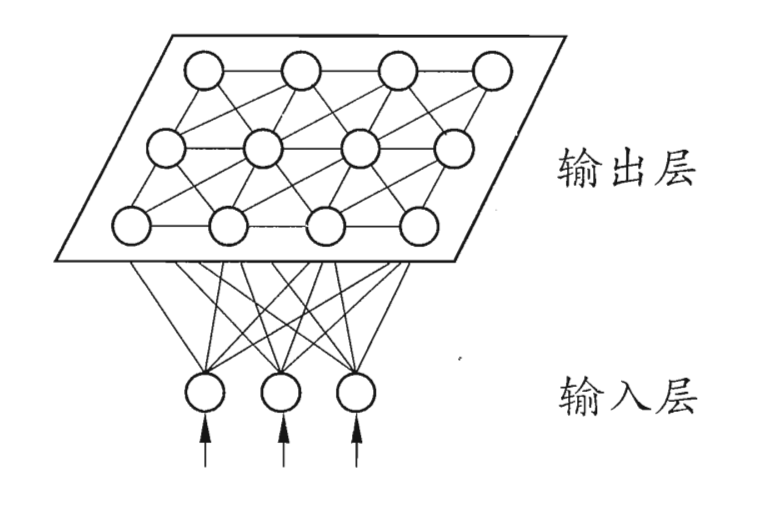
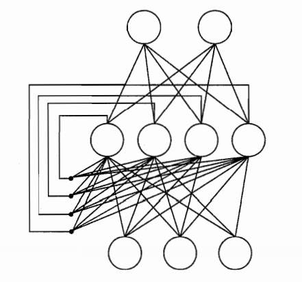
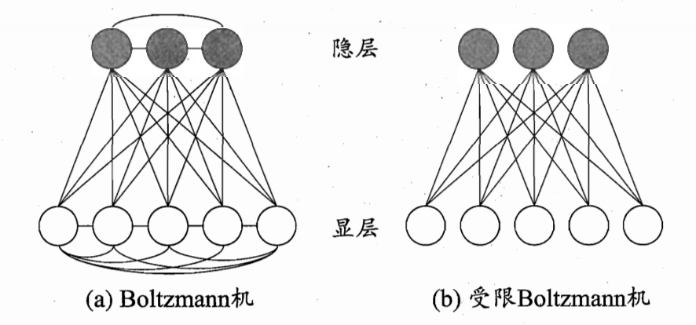
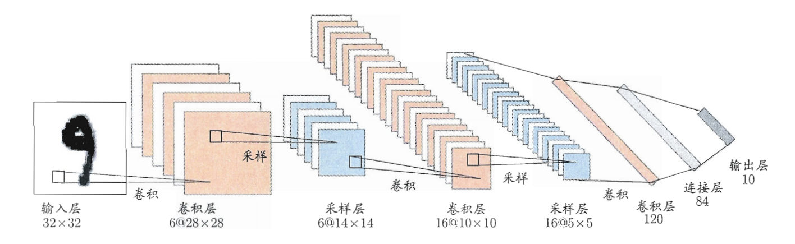

神经网络
第五章啦~😊
神经元模型
如图所示为M-P神经元模型，其中对输入按照权重计算后与阈值做比较，最后输出再通过激活函数的处理（常用sigmod）。
感知机与多层网络
感知机：两层神经元，一个输入层一个输出层，只有输出层有包含一个激活函数（如上图所示），训练时的权重调整公式如下(将阈值的训练也糅合到权重中了)：
$$
\omega_i \leftarrow \omega_i + \Delta \omega_i
$$$$
\Delta \omega_i = \eta(y- \hat y)x_i
$$能处理的都是线性可分问题，如下图中的abc类型，但不能处理d：
多层前馈神经网络：多层是指在输入层和输出层见加入多个隐藏层(hidden layer)，前馈神经网络指每层神经元和下一层完全链接，但是不存在同层和跨层链接，如下图所示，它可以解决上图的d异或问题了。

误差逆传播算法(BP)
之前的感知机的学习规则不足够适用于多层网络的学习，因此出现了误差逆传播算法(error BackPropagation)，其基本思想是先计算出当前权重和阈值下最后的输出，根据输出和验证集计算出均分误差，然后由于这一个关系：
$$
上层输入值 + 链接权重\overset{决定}{\longmapsto} 计算值+阈值 \overset{决定}{\longmapsto} 这层输出值
$$
我们可以对error进行求导，将这个错误迭代传播到前面层中，起到模型调整的目的，这个算法就是基于梯度下降(gradient descent)策略，以目标的负梯度方向对参数进行调整：
$$
\Delta \omega_{fj} = - \eta \frac {\partial E_k}{\partial \omega_{hj}}
$$
其中每层的学习率也可设置为不同的值。
累计误差逆传播算法：上面的标准BP算法是针对单个样例，但是也可以通过计算多个样例的平均值来优化
如何设置神经元个数：试错法
如何处理过拟合：
早停：当训练集误差降低但是训练集误差增加时就停止
正则化：在误差目标函数中增加一个用于描述网络复杂度的部分如：
$$
E = \lambda \frac 1m \sum_{k=1}^m E_k + (1-\lambda) \sum_i \omega_i^2
$$
全局最小和局部最小
上图能把这个意思表达得很明确了，目前有多种避免局部极小的策略：
- 不同的初始值训练后比较
- 模拟退火：一定的概率接受比当前更差的结果
- 随机梯度下降：即使在局部极小点，但可能梯度仍然不为0，则会继续搜索[1]
- 遗传算法
启发式算法，无理论依据。
其他常见神经网络
RBF(Radial Basis Function)
描述词：单隐层，前馈神经网络，激活函数为径向基函数[2]（通常为样本$x$到数据中心$c_i$之间的欧式距离的单调函数），表达式为：
$$
\varphi(x) = \sum_{i=1}^q \omega_i \rho(x, c_i)
$$
$$
\rho(x, c_i) = e^{-\beta_i ||x-c_i||^2}
$$
其中$q$是隐藏层的神经元个数，训练步骤是：
- 确定神经元中心$c_i$，常用的是随机采样、聚类等
- 利用BP算法训练参数
ART(Adaptive Resonance Theory)
- 竞争型学习（对抗学习？）：无监督学习策略[3]，神经元相互竞争，“胜者通吃”😥（我们社会也是嘛）
- 组成：比较层，识别层，识别阈值，重置模块
- 重点识别层：
- 获胜者将抑制失败者，判断获胜的依据是计算出的向量和各个模式的向量距离
- 阈值判断
- 大于阈值（距离小于某个界限）：被归为那一类，同时参数也会更新，以后类似的会更容易被分到这里
- 小于阈值：自成一派
- 优点：缓解了“可塑性-稳定性窘境”；可进行增量学习/在线学习[4]
- 可塑性：学习新知识的能力
- 稳定性：保持旧记忆力（突然想起LSTM[5]）
SOM
如下图所示，这里讲得有点抽象，大致是将高维的输入层映射到低维的输出层中（这里是二维），然后为了能更好地表征，输出层会角逐出获胜的神经元，调整它及其邻近神经元的权重，一种拓扑结构的改变。
级联相关网络
结构自适应网络将网络结构也作为学习的目标之一，两个要点如下：
- 级联：最开始只有输出层和输出层，之后加层级结构
- 相关：最大化新神经元的输出与网络误差之间的相关性
缺点：数据小的时候容易过拟合
优点：无需设置网络层数、隐层神经元数目，训练速度较快
Elman
不同于前馈神经网络（明白这里为什么叫前馈啦），“递归神经网络”允许出现环形结构，让一些神经元的输出反馈回来作为输入信号。其中Elman一个常用的递归神经网络，隐藏层的输出反馈作为其输入，激活函数为sigmoid，训练用BP。
Boltzman
为网络定义一个能量，能量最小的时候网络达到理想状态，而Boltman就是这样的“基于能量的模型”。它的结构如下图所示：
神经元分为两层：显层（输入输出）和隐层（内在表达）。神经元是布尔类型，某一状态下的能量表达为：
$$
E(s) = - \sum_{i=1}^{n-1}\sum_{j=i+1}^n w_{ij}s_is_j-\sum_{i=1}^n \theta_is_i
$$
则这个状态出现的概率就是它的能量在所有状态总的能量和的占比。标准的Boltzman是全连接图，但是复杂度太高，所以简化成上图中b的受限状态。
受限Boltzman机常用“对比散度”（contrastive Divergence，简称CD）来进行训练。
$$
P(v|h) = \prod_{i=1}^d P(v_i|h)
$$
$$
P(h|v) = \prod_{i=1}^q P(h_j|v)
$$
先由显层样本的数据$v$求得隐层的分布，然后根据这个概率分布求采样得到$h$[6]，然后又从$h$求得$v’$.连接权的更新为：
$$
\Delta w = \eta(vh^T-v’h’^T)
$$
深度学习
增加层数比增加神经元更有效（能更大程度上增加复杂度）
多隐层神经网络很难用经典算法（如BP）进行训练，因为在逆传播时往往会“发散”
无监督逐层训练：训练多隐层网络，每次训练一层隐节点（基于上一层的输出，自己作为这层的输出者，夹在中间的感觉）每一层的训练为“预训练”，然后再用BP对整个进行微调，是一种局部+全局的方式。如深度信念网络(DBN)
”权共享“：一组神经元使用相同的连接权，在卷积神经网络中应用较多（CNN）[7]

后续扩展
[1] 模拟退火&&随机梯度下降的区别
[2] 径向基函数的概念还是不太清楚
[3] 其他常用的无监督学习方法
[4] 增量学习/在线学习？
[5] 以后些些LSTM，也许嘻嘻
[6] 这里的反复跳转我总觉得学习信息会逐层流失，不是很明白
[7] 这里暂时不详谈
碎碎念
银杏好美✨